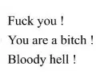

Journal · 2026-03-18
微信聊天记录
刘小舟 : ????哭哭 2026年3月18日 00:08 刘小舟 : 你原谅我了嘛宝宝[可怜] 2026年3月18日 00:17 吉姆哈克 : @死刘同学，，是第1遍！Fuck you ! You are a bitch ! Bloody hell ! 2026年3月18日 10:15 吉姆哈克 : 你撤回了一条消息 2026年3月18日 10:15
刘小舟 : ???? *sniff sniff* 2026年3月18日 00:08 刘小舟 : Have you forgiven me, baby? [可怜] 2026年3月18日 00:17 吉姆哈克 : @damned Liu, that's the first time! Fuck you ! You are a bitch ! Bloody hell ! 2026年3月18日 10:15 吉姆哈克 : You recalled a message 2026年3月18日 10:15
刘小舟 : ???? bouhou 2026年3月18日 00:08 刘小舟 : Tu m'as pardonné, bébé ? [可怜] 2026年3月18日 00:17 吉姆哈克 : @ce sacré de Liu, c'est la première fois ! Fuck you ! You are a bitch ! Bloody hell ! 2026年3月18日 10:15 吉姆哈克 : Tu as retiré un message 2026年3月18日 10:15
刘小舟 : ???? heul 2026年3月18日 00:08 刘小舟 : Hast du mir verziehen, Baby? [可怜] 2026年3月18日 00:17 吉姆哈克 : @verdammter Liu, das ist das erste Mal! Fuck you ! You are a bitch ! Bloody hell ! 2026年3月18日 10:15 吉姆哈克 : Du hast eine Nachricht zurückgezogen 2026年3月18日 10:15

吉姆哈克 : @死刘同学，，是第1遍！Fuck you ! You are a bitch ! Bloody hell ! 2026年3月18日 10:17
吉姆哈克 : @damn classmate Liu,, that's the 1st time! Fuck you ! You are a bitch ! Bloody hell ! 2026年3月18日 10:17
吉姆哈克 : @satané camarade Liu,, c'est la 1re fois ! Fuck you ! You are a bitch ! Bloody hell ! 2026年3月18日 10:17
吉姆哈克 : @verdammter Kommilitone Liu,, das ist das 1. Mal! Fuck you ! You are a bitch ! Bloody hell ! 2026年3月18日 10:17

吉姆哈克 : @！刘同学，，是第2遍！Fuck you ! You are a bitch ! Bloody hell ! 2026年3月18日 10:17
吉姆哈克 : @! classmate Liu,, that's the 2nd time! Fuck you ! You are a bitch ! Bloody hell ! 2026年3月18日 10:17
吉姆哈克 : @! camarade Liu,, c'est la 2e fois ! Fuck you ! You are a bitch ! Bloody hell ! 2026年3月18日 10:17
吉姆哈克 : @! Kommilitone Liu,, das ist das 2. Mal! Fuck you ! You are a bitch ! Bloody hell ! 2026年3月18日 10:17

吉姆哈克 : @！刘同学，，是第3遍！Fuck you ! You are a bitch ! Bloody hell ! 2026年3月18日 10:18 刘小舟 : 你早就超过100条了?? 2026年3月18日 10:18
吉姆哈克 : @! classmate Liu,, that's the 3rd time! Fuck you ! You are a bitch ! Bloody hell ! 2026年3月18日 10:18 刘小舟 : You passed 100 long ago?? 2026年3月18日 10:18
吉姆哈克 : @! camarade Liu,, c'est la 3e fois ! Fuck you ! You are a bitch ! Bloody hell ! 2026年3月18日 10:18 刘小舟 : Tu as dépassé 100 depuis longtemps?? 2026年3月18日 10:18
吉姆哈克 : @! Kommilitone Liu,, das ist das 3. Mal! Fuck you ! You are a bitch ! Bloody hell ! 2026年3月18日 10:18 刘小舟 : Du bist doch längst über 100?? 2026年3月18日 10:18

吉姆哈克 : @！刘同学，，是第4遍！Fuck you ! You are a bitch ! Bloody hell ! 2026年3月18日 10:18
吉姆哈克 : @! classmate Liu,, that's the 4th time! Fuck you ! You are a bitch ! Bloody hell ! 2026年3月18日 10:18
吉姆哈克 : @! camarade Liu,, c'est la 4e fois ! Fuck you ! You are a bitch ! Bloody hell ! 2026年3月18日 10:18
吉姆哈克 : @! Kommilitone Liu,, das ist das 4. Mal! Fuck you ! You are a bitch ! Bloody hell ! 2026年3月18日 10:18
吉姆哈克 : [图片] 2026年3月18日 00:17 吉姆哈克 : [图片] 2026年3月18日 00:18 吉姆哈克 : [图片] 2026年3月18日 10:26 吉姆哈克 : 等到循环第10000遍?? 2026年3月18日 10:27 吉姆哈克 : 估计是11天后 2026年3月18日 10:28 吉姆哈克 : [图片] 2026年3月18日 10:28 吉姆哈克 : 每10秒钟发一遍 2026年3月18日 10:28 吉姆哈克 : 电子黑奴，无敌了 2026年3月18日 10:28 吉姆哈克 : 骂死刘同学 2026年3月18日 10:29 吉姆哈克 : 少打了个零，应该是1.1天后 引用：****** ****** 2026年3月18日 10:31 吉姆哈克 : [图片] 2026年3月18日 10:31 吉姆哈克 : 但对电子黑奴来说，用一天半的时间，骂刘同学，也算劳苦功高[强][强][强] 2026年3月18日 10:32 吉姆哈克 : [图片] 2026年3月18日 11:07 吉姆哈克 : [图片] 2026年3月18日 11:07 吉姆哈克 : [图片] 2026年3月18日 11:07
吉姆哈克 : [图片] 2026年3月18日 00:17 吉姆哈克 : [图片] 2026年3月18日 00:18 吉姆哈克 : [图片] 2026年3月18日 10:26 吉姆哈克 : By the 10000th loop?? 2026年3月18日 10:27 吉姆哈克 : Probably 11 days later 2026年3月18日 10:28 吉姆哈克 : [图片] 2026年3月18日 10:28 吉姆哈克 : Sends once every 10 seconds 2026年3月18日 10:28 吉姆哈克 : The digital slave is unbeatable 2026年3月18日 10:28 吉姆哈克 : Curse classmate Liu to death 2026年3月18日 10:29 吉姆哈克 : Missed a zero, should be 1.1 days later Quote: ****** ****** 2026年3月18日 10:31 吉姆哈克 : [图片] 2026年3月18日 10:31 吉姆哈克 : But for a digital slave, spending a day and a half cursing classmate Liu still counts as distinguished service [强][强][强] 2026年3月18日 10:32 吉姆哈克 : [图片] 2026年3月18日 11:07 吉姆哈克 : [图片] 2026年3月18日 11:07 吉姆哈克 : [图片] 2026年3月18日 11:07
吉姆哈克 : [图片] 2026年3月18日 00:17 吉姆哈克 : [图片] 2026年3月18日 00:18 吉姆哈克 : [图片] 2026年3月18日 10:26 吉姆哈克 : À la 10 000e boucle?? 2026年3月18日 10:27 吉姆哈克 : Sans doute 11 jours après 2026年3月18日 10:28 吉姆哈克 : [图片] 2026年3月18日 10:28 吉姆哈克 : Ça envoie une fois toutes les 10 secondes 2026年3月18日 10:28 吉姆哈克 : L'e-esclave est imbattable 2026年3月18日 10:28 吉姆哈克 : Injurier le camarade Liu à mort 2026年3月18日 10:29 吉姆哈克 : J'ai oublié un zéro, ça devrait être 1,1 jour après Citation : ****** ****** 2026年3月18日 10:31 吉姆哈克 : [图片] 2026年3月18日 10:31 吉姆哈克 : Mais pour un e-esclave, passer un jour et demi à injurier le camarade Liu, c'est déjà un fier service [强][强][强] 2026年3月18日 10:32 吉姆哈克 : [图片] 2026年3月18日 11:07 吉姆哈克 : [图片] 2026年3月18日 11:07 吉姆哈克 : [图片] 2026年3月18日 11:07
吉姆哈克 : [图片] 2026年3月18日 00:17 吉姆哈克 : [图片] 2026年3月18日 00:18 吉姆哈克 : [图片] 2026年3月18日 10:26 吉姆哈克 : Beim 10 000. Schleifendurchlauf?? 2026年3月18日 10:27 吉姆哈克 : Wohl in 11 Tagen 2026年3月18日 10:28 吉姆哈克 : [图片] 2026年3月18日 10:28 吉姆哈克 : Sendet einmal alle 10 Sekunden 2026年3月18日 10:28 吉姆哈克 : Der digitale Sklave ist unschlagbar 2026年3月18日 10:28 吉姆哈克 : Beschimpf Kommilitone Liu zu Tode 2026年3月18日 10:29 吉姆哈克 : Eine Null vergessen, müsste in 1,1 Tagen sein Zitat: ****** ****** 2026年3月18日 10:31 吉姆哈克 : [图片] 2026年3月18日 10:31 吉姆哈克 : Aber für einen digitalen Sklaven ist es ein verdienstvoller Einsatz, anderthalb Tage lang Liu zu beschimpfen [强][强][强] 2026年3月18日 10:32 吉姆哈克 : [图片] 2026年3月18日 11:07 吉姆哈克 : [图片] 2026年3月18日 11:07 吉姆哈克 : [图片] 2026年3月18日 11:07
吉姆哈克 : Hiho 2026年3月18日 10:58 吉姆哈克 : 我昨天犯了一个严重的错误 2026年3月18日 10:58 吉姆哈克 : 但是没有给人打0分 2026年3月18日 10:58 吉姆哈克 : 给你打0分的人，真不是我 2026年3月18日 10:59 吉姆哈克 : 我给大家打的分都挺高的 2026年3月18日 10:59 吉姆哈克 : 别听刘同学造谣[尴尬][尴尬][尴尬] 2026年3月18日 10:59 吉姆哈克 : [图片] 2026年3月18日 10:59 吉姆哈克 : [图片] 2026年3月18日 10:59 吉姆哈克 : 我当时感觉，事情不对劲，就及时纠正了分数，还提前拍照留证了[发抖][发抖][发抖] 2026年3月18日 11:00 吉姆哈克 : 对不起，打扰了。别听刘同学瞎说[合十][合十][合十] 2026年3月18日 11:00 毕苏杭 : 就是开始你已经打了后来纠正了 2026年3月18日 11:01 吉姆哈克 : 我真没打零分 2026年3月18日 11:01 吉姆哈克 : 这是我过后用蒋鹏伟电脑，复查时候拍的 引用：****** ****** 2026年3月18日 11:01
吉姆哈克 : Hiho 2026年3月18日 10:58 吉姆哈克 : I made a serious mistake yesterday 2026年3月18日 10:58 吉姆哈克 : But I didn't give anyone a zero 2026年3月18日 10:58 吉姆哈克 : The one who gave you a zero really isn't me 2026年3月18日 10:59 吉姆哈克 : I gave everyone fairly high scores 2026年3月18日 10:59 吉姆哈克 : Don't listen to classmate Liu's rumors [尴尬][尴尬][尴尬] 2026年3月18日 10:59 吉姆哈克 : [图片] 2026年3月18日 10:59 吉姆哈克 : [图片] 2026年3月18日 10:59 吉姆哈克 : I sensed something was off at the time, corrected the scores promptly, and even photographed them in advance as evidence [发抖][发抖][发抖] 2026年3月18日 11:00 吉姆哈克 : Sorry to bother you. Don't listen to classmate Liu's nonsense [合十][合十][合十] 2026年3月18日 11:00 毕苏杭 : So you had entered scores at first and corrected them later 2026年3月18日 11:01 吉姆哈克 : I really didn't give a zero 2026年3月18日 11:01 吉姆哈克 : This was taken afterward on Jiang Pengwei's computer when I double-checked Quote: ****** ****** 2026年3月18日 11:01
吉姆哈克 : Hiho 2026年3月18日 10:58 吉姆哈克 : J'ai commis une grave erreur hier 2026年3月18日 10:58 吉姆哈克 : Mais je n'ai mis de zéro à personne 2026年3月18日 10:58 吉姆哈克 : Celui qui t'a mis un zéro, ce n'est vraiment pas moi 2026年3月18日 10:59 吉姆哈克 : J'ai mis à tout le monde des notes plutôt élevées 2026年3月18日 10:59 吉姆哈克 : Ne crois pas les rumeurs du camarade Liu [尴尬][尴尬][尴尬] 2026年3月18日 10:59 吉姆哈克 : [图片] 2026年3月18日 10:59 吉姆哈克 : [图片] 2026年3月18日 10:59 吉姆哈克 : J'ai senti que quelque chose clochait, j'ai corrigé les notes à temps et j'ai même pris des photos en avance comme preuve [发抖][发抖][发抖] 2026年3月18日 11:00 吉姆哈克 : Désolé du dérangement. Ne crois pas les bêtises du camarade Liu [合十][合十][合十] 2026年3月18日 11:00 毕苏杭 : Donc tu avais d'abord mis les notes puis corrigé après 2026年3月18日 11:01 吉姆哈克 : Je n'ai vraiment pas mis de zéro 2026年3月18日 11:01 吉姆哈克 : C'est pris après sur l'ordinateur de Jiang Pengwei pendant ma revérification Citation : ****** ****** 2026年3月18日 11:01
吉姆哈克 : Hiho 2026年3月18日 10:58 吉姆哈克 : Gestern hab ich einen schweren Fehler gemacht 2026年3月18日 10:58 吉姆哈克 : Aber ich habe niemandem eine Null gegeben 2026年3月18日 10:58 吉姆哈克 : Wer dir eine Null gegeben hat, bin wirklich nicht ich 2026年3月18日 10:59 吉姆哈克 : Ich hab allen ziemlich hohe Punkte gegeben 2026年3月18日 10:59 吉姆哈克 : Hör nicht auf Kommilitone Lius Gerüchte [尴尬][尴尬][尴尬] 2026年3月18日 10:59 吉姆哈克 : [图片] 2026年3月18日 10:59 吉姆哈克 : [图片] 2026年3月18日 10:59 吉姆哈克 : Ich hab damals gemerkt, dass etwas nicht stimmte, hab die Punkte rechtzeitig korrigiert und vorab zur Beweissicherung fotografiert [发抖][发抖][发抖] 2026年3月18日 11:00 吉姆哈克 : Entschuldige die Störung. Hör nicht auf Kommilitone Lius Geschwätz [合十][合十][合十] 2026年3月18日 11:00 毕苏杭 : Also hattest du erst Punkte vergeben und später korrigiert 2026年3月18日 11:01 吉姆哈克 : Ich hab wirklich keine Null gegeben 2026年3月18日 11:01 吉姆哈克 : Das ist danach bei der Nachprüfung an Jiang Pengweis Rechner aufgenommen worden Zitat: ****** ****** 2026年3月18日 11:01
吉姆哈克 : 我的电脑，正在骂刘同学，骂他10000遍 2026年3月18日 11:13 吉姆哈克 : 太感谢你的理解了[流泪][流泪][流泪] 引用：行，不是你就好[OK][OK]因为我们大创一个组，也不希望大家闹不愉快 2026年3月18日 11:13 吉姆哈克 : 这是昨天下午14:10的记录 引用：****** ****** 2026年3月18日 11:17 吉姆哈克 : 当时我只发现自己多打了个0 2026年3月18日 11:17 吉姆哈克 : 其他的打分都很规整 2026年3月18日 11:17 吉姆哈克 : 我当时并不知道有人给你打0分 2026年3月18日 11:17 吉姆哈克 : 我是直到晚上才得知情报的 2026年3月18日 11:17 吉姆哈克 : [群聊的聊天记录] 2026年3月18日 11:18 吉姆哈克 : [群聊的聊天记录] 2026年3月18日 11:18 毕苏杭 : 嗯嗯我知道了[捂脸]下课说吧 2026年3月18日 11:18 吉姆哈克 : 没事没事，我现在只跟刘同学闹得不愉快[尴尬][尴尬][尴尬] 引用：行，不是你就好[OK][OK]因为我们大创一个组，也不希望大家闹不愉快 2026年3月18日 11:18
吉姆哈克 : My computer is cursing classmate Liu right now, cursing him 10000 times 2026年3月18日 11:13 吉姆哈克 : Thank you so much for understanding [流泪][流泪][流泪] Quote: Fine, as long as it wasn't you [OK][OK] since we're in the same innovation-project group and nobody wants bad blood 2026年3月18日 11:13 吉姆哈克 : This is the record from yesterday at 14:10 Quote: ****** ****** 2026年3月18日 11:17 吉姆哈克 : At the time I only noticed I'd typed an extra zero 2026年3月18日 11:17 吉姆哈克 : All the other scores were in order 2026年3月18日 11:17 吉姆哈克 : I had no idea at the time that someone gave you a zero 2026年3月18日 11:17 吉姆哈克 : I only got the intel that evening 2026年3月18日 11:17 吉姆哈克 : [群聊的聊天记录] 2026年3月18日 11:18 吉姆哈克 : [群聊的聊天记录] 2026年3月18日 11:18 毕苏杭 : Mm-hmm I get it [捂脸] let's talk after class 2026年3月18日 11:18 吉姆哈克 : It's fine, it's fine, classmate Liu is the only one I'm on bad terms with now [尴尬][尴尬][尴尬] Quote: Fine, as long as it wasn't you [OK][OK] 2026年3月18日 11:18
吉姆哈克 : Mon ordinateur est en train d'injurier le camarade Liu, 10 000 fois 2026年3月18日 11:13 吉姆哈克 : Merci infiniment de ta compréhension [流泪][流泪][流泪] Citation : Bon, du moment que ce n'est pas toi [OK][OK] comme on est dans le même groupe de projet innovant, personne ne veut de froid 2026年3月18日 11:13 吉姆哈克 : C'est la trace d'hier à 14h10 Citation : ****** ****** 2026年3月18日 11:17 吉姆哈克 : Sur le moment j'avais seulement vu que j'avais tapé un zéro en trop 2026年3月18日 11:17 吉姆哈克 : Toutes les autres notes étaient régulières 2026年3月18日 11:17 吉姆哈克 : Je ne savais pas à ce moment-là qu'on t'avait mis un zéro 2026年3月18日 11:17 吉姆哈克 : Je n'ai eu l'info que le soir 2026年3月18日 11:17 吉姆哈克 : [群聊的聊天记录] 2026年3月18日 11:18 吉姆哈克 : [群聊的聊天记录] 2026年3月18日 11:18 毕苏杭 : Ouais ouais j'ai compris [捂脸] on en parle après le cours 2026年3月18日 11:18 吉姆哈克 : Rien rien, je suis seulement fâché avec le camarade Liu maintenant [尴尬][尴尬][尴尬] Citation : Bon, du moment que ce n'est pas toi [OK][OK] 2026年3月18日 11:18
吉姆哈克 : Mein Rechner beschimpft gerade Kommilitone Liu, 10 000 Mal 2026年3月18日 11:13 吉姆哈克 : Vielen Dank für dein Verständnis [流泪][流泪][流泪] Zitat: Schon gut, hauptsache nicht du [OK][OK] wir sind ja in einer Innovationsprojekt-Gruppe, niemand will böses Blut 2026年3月18日 11:13 吉姆哈克 : Das ist der Eintrag von gestern um 14:10 Zitat: ****** ****** 2026年3月18日 11:17 吉姆哈克 : Damals hatte ich nur bemerkt, dass ich eine Null zu viel getippt hatte 2026年3月18日 11:17 吉姆哈克 : Alle anderen Bewertungen waren ordentlich 2026年3月18日 11:17 吉姆哈克 : Ich wusste damals nicht, dass dir jemand eine Null gegeben hat 2026年3月18日 11:17 吉姆哈克 : Die Info hab ich erst abends bekommen 2026年3月18日 11:17 吉姆哈克 : [群聊的聊天记录] 2026年3月18日 11:18 吉姆哈克 : [群聊的聊天记录] 2026年3月18日 11:18 毕苏杭 : Mhm, alles klar [捂脸] reden wir nach dem Unterricht 2026年3月18日 11:18 吉姆哈克 : Schon gut, schon gut, ich hab nur mit Kommilitone Liu gerade Streit [尴尬][尴尬][尴尬] Zitat: Schon gut, hauptsache nicht du [OK][OK] 2026年3月18日 11:18
吉姆哈克 : [图片] 2026年3月18日 13:38 吉姆哈克 : 我找到实验小白鼠了 2026年3月18日 13:39 吉姆哈克 : [群聊的聊天记录] 2026年3月18日 13:39 吉姆哈克 : [群聊的聊天记录] 2026年3月18日 13:39 吉姆哈克 : 一个好朋狗，昨晚竟然传播关于我的“两个劲爆消息” 2026年3月18日 13:40 吉姆哈克 : 所以，好朋狗??，正在挨骂，将要挨10000遍骂 引用：****** ****** 2026年3月18日 13:41 吉姆哈克 : [群聊的聊天记录] 2026年3月18日 13:41 吉姆哈克 : [图片] 2026年3月18日 13:42 夏佳一 : 怎么跟我大一一样 2026年3月18日 14:07 夏佳一 : 不要掺和这些谣言什么的 2026年3月18日 14:08 夏佳一 : 很无聊的而且很伤身体 2026年3月18日 14:08
吉姆哈克 : [图片] 2026年3月18日 13:38 吉姆哈克 : I found my lab rat 2026年3月18日 13:39 吉姆哈克 : [群聊的聊天记录] 2026年3月18日 13:39 吉姆哈克 : [群聊的聊天记录] 2026年3月18日 13:39 吉姆哈克 : A good friend-dawg actually spread "two bombshell stories" about me last night 2026年3月18日 13:40 吉姆哈克 : So the friend-dawg?? is getting cursed now, about to take 10000 rounds Quote: ****** ****** 2026年3月18日 13:41 吉姆哈克 : [群聊的聊天记录] 2026年3月18日 13:41 吉姆哈克 : [图片] 2026年3月18日 13:42 夏佳一 : How is this just like my freshman year 2026年3月18日 14:07 夏佳一 : Don't get mixed up in these rumors and stuff 2026年3月18日 14:08 夏佳一 : It's pointless and really wears you out 2026年3月18日 14:08
吉姆哈克 : [图片] 2026年3月18日 13:38 吉姆哈克 : J'ai trouvé mon cobaye 2026年3月18日 13:39 吉姆哈克 : [群聊的聊天记录] 2026年3月18日 13:39 吉姆哈克 : [群聊的聊天记录] 2026年3月18日 13:39 吉姆哈克 : Un bon pote a osé répandre « deux infos choc » sur moi hier soir 2026年3月18日 13:40 吉姆哈克 : Du coup le pote?? se fait injurier là, il va en prendre 10 000 Citation : ****** ****** 2026年3月18日 13:41 吉姆哈克 : [群聊的聊天记录] 2026年3月18日 13:41 吉姆哈克 : [图片] 2026年3月18日 13:42 夏佳一 : Comme moi en première année 2026年3月18日 14:07 夏佳一 : Ne te mêle pas à ces rumeurs et tout ça 2026年3月18日 14:08 夏佳一 : C'est futile et ça use la santé 2026年3月18日 14:08
吉姆哈克 : [图片] 2026年3月18日 13:38 吉姆哈克 : Ich hab meine Versuchskaninchen gefunden 2026年3月18日 13:39 吉姆哈克 : [群聊的聊天记录] 2026年3月18日 13:39 吉姆哈克 : [群聊的聊天记录] 2026年3月18日 13:39 吉姆哈克 : Ein guter Kumpel hat gestern Abend tatsächlich „zwei Knaller-News“ über mich verbreitet 2026年3月18日 13:40 吉姆哈克 : Also wird der Kumpel?? jetzt beschimpft, kriegt gleich 10 000 Runden Zitat: ****** ****** 2026年3月18日 13:41 吉姆哈克 : [群聊的聊天记录] 2026年3月18日 13:41 吉姆哈克 : [图片] 2026年3月18日 13:42 夏佳一 : Genau wie bei mir im ersten Jahr 2026年3月18日 14:07 夏佳一 : Lass dich auf diese Gerüchte nicht ein 2026年3月18日 14:08 夏佳一 : Das ist sinnlos und zehrt an den Nerven 2026年3月18日 14:08
吉姆哈克 : [图片] 2026年3月18日 15:35 吉姆哈克 : [图片] 2026年3月18日 15:35 吉姆哈克 : 我的天哪 2026年3月18日 15:35 吉姆哈克 : 我根本就没算 2026年3月18日 15:35 吉姆哈克 : 连图像都是NanoBanana生成的 2026年3月18日 15:36 吉姆哈克 : 全是都是错的，横竖轴数字都是乱的 2026年3月18日 15:36 邹予嘉 : [破涕为笑][破涕为笑][破涕为笑][破涕为笑][破涕为笑] 2026年3月18日 15:47
吉姆哈克 : [图片] 2026年3月18日 15:35 吉姆哈克 : [图片] 2026年3月18日 15:35 吉姆哈克 : My god 2026年3月18日 15:35 吉姆哈克 : I didn't calculate it at all 2026年3月18日 15:35 吉姆哈克 : Even the chart was generated by NanoBanana 2026年3月18日 15:36 吉姆哈克 : It's all wrong, the axis numbers are scrambled every which way 2026年3月18日 15:36 邹予嘉 : [破涕为笑][破涕为笑][破涕为笑][破涕为笑][破涕为笑] 2026年3月18日 15:47
吉姆哈克 : [图片] 2026年3月18日 15:35 吉姆哈克 : [图片] 2026年3月18日 15:35 吉姆哈克 : Mon Dieu 2026年3月18日 15:35 吉姆哈克 : Je n'ai rien calculé du tout 2026年3月18日 15:35 吉姆哈克 : Même le graphique est généré par NanoBanana 2026年3月18日 15:36 吉姆哈克 : Tout est faux, les chiffres des axes sont dans le désordre 2026年3月18日 15:36 邹予嘉 : [破涕为笑][破涕为笑][破涕为笑][破涕为笑][破涕为笑] 2026年3月18日 15:47
吉姆哈克 : [图片] 2026年3月18日 15:35 吉姆哈克 : [图片] 2026年3月18日 15:35 吉姆哈克 : Meine Güte 2026年3月18日 15:35 吉姆哈克 : Ich hab überhaupt nicht gerechnet 2026年3月18日 15:35 吉姆哈克 : Sogar die Grafik ist von NanoBanana erzeugt 2026年3月18日 15:36 吉姆哈克 : Alles falsch, die Achsenzahlen sind völlig durcheinander 2026年3月18日 15:36 邹予嘉 : [破涕为笑][破涕为笑][破涕为笑][破涕为笑][破涕为笑] 2026年3月18日 15:47
吉姆哈克 : Hiho，团委好 2026年3月18日 15:58 吉姆哈克 : 我刚从万同学那了解到 2026年3月18日 15:58 吉姆哈克 : 智慧团结系统在IOS系统上，评分有Bug 2026年3月18日 15:58 吉姆哈克 : 有同学怎么打分显示0 2026年3月18日 15:58 吉姆哈克 : 没有人故意给同学打0分 2026年3月18日 15:58 吉姆哈克 : [图片] 2026年3月18日 15:58 吉姆哈克 : [图片] 2026年3月18日 15:58 吉姆哈克 : 而且，打0分的人，真不是我 2026年3月18日 15:59 吉姆哈克 : 你们不要听刘同学瞎说[发抖][发抖][发抖] 2026年3月18日 15:59 吉姆哈克 : 就是万同学打分时，有两个同学的分数框，怎么输入都是0，但他后来修改好了 引用：有同学怎么打分显示0 2026年3月18日 16:01 吉姆哈克 : 好了，没事了 2026年3月18日 16:04 吉姆哈克 : 太感谢你们的理解了 2026年3月18日 16:04 吉姆哈克 : [皱眉][皱眉][皱眉] 2026年3月18日 16:04 陈梓童 : 对对对这个我是相信的 引用：没有人故意给同学打0分 2026年3月18日 16:45 陈梓童 : "陈梓童 " 撤回了一条消息 2026年3月18日 16:45 陈梓童 : 这个打分是完全匿名的的，没人知道具体谁给谁打多少分 2026年3月18日 16:45
吉姆哈克 : Hiho, hello Youth League Committee 2026年3月18日 15:58 吉姆哈克 : I just learned from classmate Wan 2026年3月18日 15:58 吉姆哈克 : That the Smart League-Building system has a scoring bug on iOS 2026年3月18日 15:58 吉姆哈克 : Some classmates' scores show 0 no matter how they grade 2026年3月18日 15:58 吉姆哈克 : Nobody deliberately gave a classmate a zero 2026年3月18日 15:58 吉姆哈克 : [图片] 2026年3月18日 15:58 吉姆哈克 : [图片] 2026年3月18日 15:58 吉姆哈克 : Also, the one who gave a zero really isn't me 2026年3月18日 15:59 吉姆哈克 : Don't listen to classmate Liu's nonsense [发抖][发抖][发抖] 2026年3月18日 15:59 吉姆哈克 : When classmate Wan was scoring, two classmates' score boxes read 0 no matter what he entered, but he fixed it afterward Quote: Some classmates' scores show 0 no matter how they grade 2026年3月18日 16:01 吉姆哈克 : Alright, all good now 2026年3月18日 16:04 吉姆哈克 : Thank you all so much for understanding 2026年3月18日 16:04 吉姆哈克 : [皱眉][皱眉][皱眉] 2026年3月18日 16:04 陈梓童 : Yes yes yes, this I believe Quote: Nobody deliberately gave a classmate a zero 2026年3月18日 16:45 陈梓童 : "Chen Zitong " recalled a message 2026年3月18日 16:45 陈梓童 : This scoring is completely anonymous, nobody knows exactly who gave whom what score 2026年3月18日 16:45
吉姆哈克 : Hiho, bonjour le comité de la Ligue 2026年3月18日 15:58 吉姆哈克 : Je viens d'apprendre par le camarade Wan 2026年3月18日 15:58 吉姆哈克 : Que le système Smart League-Building a un bug de notation sur iOS 2026年3月18日 15:58 吉姆哈克 : Certains camarades voient 0 quelle que soit la note mise 2026年3月18日 15:58 吉姆哈克 : Personne n'a délibérément mis un zéro à un camarade 2026年3月18日 15:58 吉姆哈克 : [图片] 2026年3月18日 15:58 吉姆哈克 : [图片] 2026年3月18日 15:58 吉姆哈克 : Et celui qui a mis un zéro, ce n'est vraiment pas moi 2026年3月18日 15:59 吉姆哈克 : Ne croyez pas les bêtises du camarade Liu [发抖][发抖][发抖] 2026年3月18日 15:59 吉姆哈克 : Quand le camarade Wan notait, les cases de deux camarades affichaient 0 quoi qu'il saisisse, mais il a corrigé ensuite Citation : Certains camarades voient 0 quelle que soit la note mise 2026年3月18日 16:01 吉姆哈克 : Voilà, c'est réglé 2026年3月18日 16:04 吉姆哈克 : Merci infiniment de votre compréhension 2026年3月18日 16:04 吉姆哈克 : [皱眉][皱眉][皱眉] 2026年3月18日 16:04 陈梓童 : Oui oui oui, ça je le crois Citation : Personne n'a délibérément mis un zéro à un camarade 2026年3月18日 16:45 陈梓童 : "Chen Zitong " a rappelé un message 2026年3月18日 16:45 陈梓童 : Cette notation est totalement anonyme, nul ne sait qui a mis quelle note à qui 2026年3月18日 16:45
吉姆哈克 : Hiho, hallo Liga-Komitee 2026年3月18日 15:58 吉姆哈克 : Ich hab gerade von Kommilitone Wan erfahren 2026年3月18日 15:58 吉姆哈克 : Dass das Smart-League-Building-System auf iOS einen Bewertungs-Bug hat 2026年3月18日 15:58 吉姆哈克 : Bei manchen Kommilitonen zeigt die Bewertung egal was 0 an 2026年3月18日 15:58 吉姆哈克 : Niemand hat einem Kommilitonen absichtlich eine Null gegeben 2026年3月18日 15:58 吉姆哈克 : [图片] 2026年3月18日 15:58 吉姆哈克 : [图片] 2026年3月18日 15:58 吉姆哈克 : Und wer eine Null gegeben hat, bin wirklich nicht ich 2026年3月18日 15:59 吉姆哈克 : Glaubt nicht Kommilitone Lius Geschwätz [发抖][发抖][发抖] 2026年3月18日 15:59 吉姆哈克 : Als Kommilitone Wan bewertete, zeigten zwei Felder egal bei der Eingabe 0, aber er hat es später korrigiert Zitat: Bei manchen Kommilitonen zeigt die Bewertung egal was 0 an 2026年3月18日 16:01 吉姆哈克 : Gut, alles erledigt 2026年3月18日 16:04 吉姆哈克 : Vielen Dank für euer Verständnis 2026年3月18日 16:04 吉姆哈克 : [皱眉][皱眉][皱眉] 2026年3月18日 16:04 陈梓童 : Genau genau genau, das glaube ich Zitat: Niemand hat einem Kommilitonen absichtlich eine Null gegeben 2026年3月18日 16:45 陈梓童 : "Chen Zitong " hat eine Nachricht zurückgerufen 2026年3月18日 16:45 陈梓童 : Diese Bewertung ist völlig anonym, niemand weiß, wer wem wie viele Punkte gegeben hat 2026年3月18日 16:45
吉姆哈克 : 昨天团员评议，吉姆哈克给毕苏杭打0分 2026年3月18日 19:16 辅导员 : 你咋给她打0分啊 2026年3月18日 19:16 吉姆哈克 : 没有矛盾，只是我的软件机器人??，被谢老师发现了 引用：听说你和同学产生了一点小矛盾，晚上有空不，我找你聊聊了解下情况 2026年3月18日 19:16 吉姆哈克 : 因为这是八卦，我也想知道“为什么吉姆哈克给毕苏杭打0分” 引用：你咋给她打0分啊 2026年3月18日 19:17 吉姆哈克 : [图片] 2026年3月18日 19:18 吉姆哈克 : [图片] 2026年3月18日 19:18 吉姆哈克 : 没有矛盾了呀 2026年3月18日 19:18 吉姆哈克 : 上面有两个聊天记录 引用：好的好的，晚上方便聊聊不 2026年3月18日 19:18 吉姆哈克 : 你可以看看刘同学怎么说 2026年3月18日 19:18 吉姆哈克 : 所以，你应该找他聊聊 2026年3月18日 19:19 吉姆哈克 : 他是同学关系中的不稳定因素 2026年3月18日 19:19 辅导员 : 我都会找大家去了解情况的 2026年3月18日 19:20 吉姆哈克 : 就是类似于大龙虾，就是我的电脑在自动化，自动在微信里骂刘同学，被谢老师发现了 引用：没有矛盾，只是我的软件机器人??，被谢老师发现了 2026年3月18日 19:20 吉姆哈克 : 吉姆哈克上学期，因为一个平安果，把尹志灿告到保卫处了 2026年3月18日 19:20
吉姆哈克 : At yesterday's League-member evaluation, Jim Harker gave Bi Suhang a zero 2026年3月18日 19:16 辅导员 : Why did you give her a zero 2026年3月18日 19:16 吉姆哈克 : There's no conflict, it's just that my software bot?? was caught by Teacher Xie Quote: I heard you had a little tiff with a classmate, are you free tonight, let's have a chat and get the picture 2026年3月18日 19:16 吉姆哈克 : Since this is gossip, I want to know too "why Jim Harker gave Bi Suhang a zero" Quote: Why did you give her a zero 2026年3月18日 19:17 吉姆哈克 : [图片] 2026年3月18日 19:18 吉姆哈克 : [图片] 2026年3月18日 19:18 吉姆哈克 : There's no conflict anymore 2026年3月18日 19:18 吉姆哈克 : There are two chat logs above Quote: Sure sure, are you free to chat tonight 2026年3月18日 19:18 吉姆哈克 : You can see what classmate Liu says 2026年3月18日 19:18 吉姆哈克 : So you should talk to him 2026年3月18日 19:19 吉姆哈克 : He's a destabilizing element among classmates 2026年3月18日 19:19 辅导员 : I'll talk to everyone to get the picture 2026年3月18日 19:20 吉姆哈克 : It's like the big lobster: my computer was automated, cursing classmate Liu on WeChat on its own, and Teacher Xie caught it Quote: There's no conflict, it's just that my software bot?? was caught by Teacher Xie 2026年3月18日 19:20 吉姆哈克 : Last semester, over a Christmas apple, Jim Harker reported Yin Zhican to the campus security office 2026年3月18日 19:20
吉姆哈克 : À l'évaluation des membres de la Ligue d'hier, Jim Harker a mis un zéro à Bi Suhang 2026年3月18日 19:16 辅导员 : Pourquoi tu lui as mis un zéro 2026年3月18日 19:16 吉姆哈克 : Pas de conflit, c'est juste que mon robot logiciel?? s'est fait repérer par M. Xie Citation : Il paraît que tu as un petit accroc avec un camarade, tu es libre ce soir, je te parle pour comprendre 2026年3月18日 19:16 吉姆哈克 : Comme c'est un ragot, je veux savoir aussi « pourquoi Jim Harker a mis un zéro à Bi Suhang » Citation : Pourquoi tu lui as mis un zéro 2026年3月18日 19:17 吉姆哈克 : [图片] 2026年3月18日 19:18 吉姆哈克 : [图片] 2026年3月18日 19:18 吉姆哈克 : Il n'y a plus de conflit 2026年3月18日 19:18 吉姆哈克 : Il y a deux historiques de discussion au-dessus Citation : D'accord d'accord, tu es libre pour parler ce soir 2026年3月18日 19:18 吉姆哈克 : Tu peux voir ce que dit le camarade Liu 2026年3月18日 19:18 吉姆哈克 : Donc tu devrais lui parler 2026年3月18日 19:19 吉姆哈克 : C'est un facteur d'instabilité dans les relations entre camarades 2026年3月18日 19:19 辅导员 : Je vais voir tout le monde pour comprendre 2026年3月18日 19:20 吉姆哈克 : C'est comme le grand homard : mon ordinateur était automatisé, il injuriait tout seul le camarade Liu sur WeChat et M. Xie l'a repéré Citation : Pas de conflit, c'est juste que mon robot logiciel?? s'est fait repérer par M. Xie 2026年3月18日 19:20 吉姆哈克 : Le semestre dernier, pour une pomme de Noël, Jim Harker a dénoncé Yin Zhican au service de sécurité du campus 2026年3月18日 19:20
吉姆哈克 : Bei der gestrigen Mitgliederbewertung hat Jim Harker Bi Suhang eine Null gegeben 2026年3月18日 19:16 辅导员 : Wieso hast du ihr eine Null gegeben 2026年3月18日 19:16 吉姆哈克 : Es gibt keinen Konflikt, nur mein Software-Bot?? ist von Lehrer Xie entdeckt worden Zitat: Ich hab gehört, du hast ein kleines Problem mit einem Kommilitonen, hast du heute Abend Zeit, ich rede mit dir, um die Lage zu verstehen 2026年3月18日 19:16 吉姆哈克 : Weil das Tratsch ist, will auch ich wissen, „warum Jim Harker Bi Suhang eine Null gegeben hat“ Zitat: Wieso hast du ihr eine Null gegeben 2026年3月18日 19:17 吉姆哈克 : [图片] 2026年3月18日 19:18 吉姆哈克 : [图片] 2026年3月18日 19:18 吉姆哈克 : Es gibt keinen Konflikt mehr 2026年3月18日 19:18 吉姆哈克 : Oben sind zwei Chatverläufe Zitat: Gut gut, hast du heute Abend Zeit zum Reden 2026年3月18日 19:18 吉姆哈克 : Du kannst sehen, was Kommilitone Liu sagt 2026年3月18日 19:18 吉姆哈克 : Also solltest du mit ihm reden 2026年3月18日 19:19 吉姆哈克 : Er ist ein destabilisierender Faktor unter den Kommilitonen 2026年3月18日 19:19 辅导员 : Ich werde mit allen reden, um die Lage zu verstehen 2026年3月18日 19:20 吉姆哈克 : Es ist wie beim großen Hummer: Mein Rechner lief automatisiert und beschimpfte von selbst Kommilitone Liu auf WeChat, das hat Lehrer Xie entdeckt Zitat: Es gibt keinen Konflikt, nur mein Software-Bot?? ist von Lehrer Xie entdeckt worden 2026年3月18日 19:20 吉姆哈克 : Letztes Semester hat Jim Harker Yin Zhican wegen eines Weihnachtsapfels beim Campus-Sicherheitsdienst angezeigt 2026年3月18日 19:20
吉姆哈克 : 他是同学关系中的不稳定因素 2026年3月18日 19:19 辅导员 : 我都会找大家去了解情况的 2026年3月18日 19:20 吉姆哈克 : 就是类似于大龙虾，就是我的电脑在自动化，自动在微信里骂刘同学，被谢老师发现了 引用：没有矛盾，只是我的软件机器人??，被谢老师发现了 2026年3月18日 19:20 吉姆哈克 : 吉姆哈克上学期，因为一个平安果，把尹志灿告到保卫处了 2026年3月18日 19:20 吉姆哈克 : 这件事情，你该怎么了解情况？ 2026年3月18日 19:20 吉姆哈克 : 我都不知道怎么了解情况 2026年3月18日 19:21 吉姆哈克 : 所以现在没有矛盾了 2026年3月18日 19:21 吉姆哈克 : 我已经消气了 2026年3月18日 19:21 吉姆哈克 : 刘同学已经道歉了 2026年3月18日 19:21 吉姆哈克 : 没事了，误会解开了 2026年3月18日 19:21 吉姆哈克 : [柴小桑与C__的聊天记录] 2026年3月18日 19:23 吉姆哈克 : 这是第二件事的具体情况 2026年3月18日 19:23 吉姆哈克 : 那个团员评议系统，设计得很粗糙，有bug 2026年3月18日 19:24 吉姆哈克 : 但是后来，分数都纠正过来了 2026年3月18日 19:24 吉姆哈克 : 没有人故意给同学打0分 2026年3月18日 19:24 吉姆哈克 : 这个误会也解开了 2026年3月18日 19:24 吉姆哈克 : 真的没事了 2026年3月18日 19:25 吉姆哈克 : 刘同学再也不会乱传谣言了 2026年3月18日 19:25 吉姆哈克 : 他已经知道错了，已经道歉了 2026年3月18日 19:25 吉姆哈克 : 我也不会再用“电子黑奴”自动化骂他了 2026年3月18日 19:26 吉姆哈克 : [皱眉][皱眉][皱眉] 2026年3月18日 19:26
吉姆哈克 : He's a destabilizing element among classmates 2026年3月18日 19:19 辅导员 : I'll talk to everyone to get the picture 2026年3月18日 19:20 吉姆哈克 : It's like the big lobster: my computer was automated, cursing classmate Liu on WeChat on its own, and Teacher Xie caught it Quote: There's no conflict, it's just that my software bot?? was caught by Teacher Xie 2026年3月18日 19:20 吉姆哈克 : Last semester, over a Christmas apple, Jim Harker reported Yin Zhican to the campus security office 2026年3月18日 19:20 吉姆哈克 : How would you go about getting the picture on this? 2026年3月18日 19:20 吉姆哈克 : I wouldn't even know how to get the picture 2026年3月18日 19:21 吉姆哈克 : So there's no conflict now 2026年3月18日 19:21 吉姆哈克 : I've cooled down 2026年3月18日 19:21 吉姆哈克 : Classmate Liu has already apologized 2026年3月18日 19:21 吉姆哈克 : It's fine, the misunderstanding is cleared up 2026年3月18日 19:21 吉姆哈克 : [柴小桑与C__的聊天记录] 2026年3月18日 19:23 吉姆哈克 : Here are the specifics of the second matter 2026年3月18日 19:23 吉姆哈克 : That League-member evaluation system is crudely designed and buggy 2026年3月18日 19:24 吉姆哈克 : But afterward the scores were all corrected 2026年3月18日 19:24 吉姆哈克 : Nobody deliberately gave a classmate a zero 2026年3月18日 19:24 吉姆哈克 : This misunderstanding is cleared up too 2026年3月18日 19:24 吉姆哈克 : Truly all good now 2026年3月18日 19:25 吉姆哈克 : Classmate Liu won't spread random rumors anymore 2026年3月18日 19:25 吉姆哈克 : He already knows he was wrong and has apologized 2026年3月18日 19:25 吉姆哈克 : I won't use the "digital slave" to automatically curse him anymore either 2026年3月18日 19:26 吉姆哈克 : [皱眉][皱眉][皱眉] 2026年3月18日 19:26
吉姆哈克 : C'est un facteur d'instabilité dans les relations entre camarades 2026年3月18日 19:19 辅导员 : Je vais voir tout le monde pour comprendre 2026年3月18日 19:20 吉姆哈克 : C'est comme le grand homard : mon ordinateur était automatisé, il injuriait tout seul le camarade Liu sur WeChat et M. Xie l'a repéré Citation : Pas de conflit, c'est juste que mon robot logiciel?? s'est fait repérer par M. Xie 2026年3月18日 19:20 吉姆哈克 : Le semestre dernier, pour une pomme de Noël, Jim Harker a dénoncé Yin Zhican au service de sécurité du campus 2026年3月18日 19:20 吉姆哈克 : Comment tu t'y prendrais pour comprendre cette affaire ? 2026年3月18日 19:20 吉姆哈克 : Je ne saurais même pas comment faire 2026年3月18日 19:21 吉姆哈克 : Donc il n'y a plus de conflit maintenant 2026年3月18日 19:21 吉姆哈克 : Je me suis calmé 2026年3月18日 19:21 吉姆哈克 : Le camarade Liu s'est déjà excusé 2026年3月18日 19:21 吉姆哈克 : C'est bon, le malentendu est levé 2026年3月18日 19:21 吉姆哈克 : [柴小桑与C__的聊天记录] 2026年3月18日 19:23 吉姆哈克 : Voici les détails de la deuxième affaire 2026年3月18日 19:23 吉姆哈克 : Ce système d'évaluation des membres est conçu grossièrement, il a des bugs 2026年3月18日 19:24 吉姆哈克 : Mais ensuite les notes ont toutes été corrigées 2026年3月18日 19:24 吉姆哈克 : Personne n'a délibérément mis un zéro à un camarade 2026年3月18日 19:24 吉姆哈克 : Ce malentendu est aussi levé 2026年3月18日 19:24 吉姆哈克 : Vraiment plus rien 2026年3月18日 19:25 吉姆哈克 : Le camarade Liu ne répandra plus de rumeurs au hasard 2026年3月18日 19:25 吉姆哈克 : Il a déjà reconnu sa faute et s'est excusé 2026年3月18日 19:25 吉姆哈克 : Je n'utiliserai plus non plus l'« e-esclave » pour l'injurier automatiquement 2026年3月18日 19:26 吉姆哈克 : [皱眉][皱眉][皱眉] 2026年3月18日 19:26
吉姆哈克 : Er ist ein destabilisierender Faktor unter den Kommilitonen 2026年3月18日 19:19 辅导员 : Ich werde mit allen reden, um die Lage zu verstehen 2026年3月18日 19:20 吉姆哈克 : Es ist wie beim großen Hummer: Mein Rechner lief automatisiert und beschimpfte von selbst Kommilitone Liu auf WeChat, das hat Lehrer Xie entdeckt Zitat: Es gibt keinen Konflikt, nur mein Software-Bot?? ist von Lehrer Xie entdeckt worden 2026年3月18日 19:20 吉姆哈克 : Letztes Semester hat Jim Harker Yin Zhican wegen eines Weihnachtsapfels beim Campus-Sicherheitsdienst angezeigt 2026年3月18日 19:20 吉姆哈克 : Wie würdest du dir hier ein Bild von der Lage machen? 2026年3月18日 19:20 吉姆哈克 : Ich wüsste selbst nicht, wie ich die Lage verstehen soll 2026年3月18日 19:21 吉姆哈克 : Also gibt es jetzt keinen Konflikt mehr 2026年3月18日 19:21 吉姆哈克 : Ich hab mich abgeregt 2026年3月18日 19:21 吉姆哈克 : Kommilitone Liu hat sich bereits entschuldigt 2026年3月18日 19:21 吉姆哈克 : Schon gut, das Missverständnis ist ausgeräumt 2026年3月18日 19:21 吉姆哈克 : [柴小桑与C__的聊天记录] 2026年3月18日 19:23 吉姆哈克 : Hier sind die Einzelheiten der zweiten Angelegenheit 2026年3月18日 19:23 吉姆哈克 : Dieses Mitgliederbewertungssystem ist grob gebaut und hat Bugs 2026年3月18日 19:24 吉姆哈克 : Aber später wurden die Punkte alle korrigiert 2026年3月18日 19:24 吉姆哈克 : Niemand hat einem Kommilitonen absichtlich eine Null gegeben 2026年3月18日 19:24 吉姆哈克 : Auch dieses Missverständnis ist ausgeräumt 2026年3月18日 19:24 吉姆哈克 : Wirklich alles gut 2026年3月18日 19:25 吉姆哈克 : Kommilitone Liu wird nicht mehr willkürlich Gerüchte verbreiten 2026年3月18日 19:25 吉姆哈克 : Er hat seinen Fehler eingesehen und sich entschuldigt 2026年3月18日 19:25 吉姆哈克 : Auch ich werde den „digitalen Sklaven“ nicht mehr zum automatischen Beschimpfen nutzen 2026年3月18日 19:26 吉姆哈克 : [皱眉][皱眉][皱眉] 2026年3月18日 19:26
吉姆哈克 : 快跑啊，傻孩子们 2026年3月18日 21:32 阿妈 : 三舅家墙上贴的 2026年3月18日 21:34 吉姆哈克 : 赌徒们也是这么想的 2026年3月18日 21:52 吉姆哈克 : 然后一条路走到黑 2026年3月18日 21:52 吉姆哈克 : 最后就不是红色的success了 2026年3月18日 21:53 吉姆哈克 : 如果人人都信这一套 2026年3月18日 21:53 吉姆哈克 : 都说这一套很有道理 2026年3月18日 21:53 吉姆哈克 : 那不就都考清华北大了？ 2026年3月18日 21:54
吉姆哈克 : Run, you silly kids 2026年3月18日 21:32 阿妈 : What's posted on Third Uncle's wall 2026年3月18日 21:34 吉姆哈克 : That's exactly what gamblers think 2026年3月18日 21:52 吉姆哈克 : Then they stubbornly go all the way to the bitter end 2026年3月18日 21:52 吉姆哈克 : In the end it's no longer a red success 2026年3月18日 21:53 吉姆哈克 : If everyone bought into this 2026年3月18日 21:53 吉姆哈克 : And said it all made perfect sense 2026年3月18日 21:53 吉姆哈克 : Wouldn't everyone get into Tsinghua and Peking University? 2026年3月18日 21:54
吉姆哈克 : Courez, pauvres enfants 2026年3月18日 21:32 阿妈 : Ce qui est collé au mur chez Troisième Oncle 2026年3月18日 21:34 吉姆哈克 : C'est exactement ce que se disent les joueurs 2026年3月18日 21:52 吉姆哈克 : Puis ils s'entêtent jusqu'au bout 2026年3月18日 21:52 吉姆哈克 : À la fin ce n'est même plus un success rouge 2026年3月18日 21:53 吉姆哈克 : Si tout le monde croyait à ce discours 2026年3月18日 21:53 吉姆哈克 : Et disait que c'était plein de bon sens 2026年3月18日 21:53 吉姆哈克 : Tout le monde entrerait à Tsinghua et à Pékin ? 2026年3月18日 21:54
吉姆哈克 : Lauft, ihr naiven Kinder 2026年3月18日 21:32 阿妈 : Was bei Drittem Onkel an der Wand hängt 2026年3月18日 21:34 吉姆哈克 : Genau so denken auch die Spieler 2026年3月18日 21:52 吉姆哈克 : Und dann rennen sie verbissen bis zum bitteren Ende 2026年3月18日 21:52 吉姆哈克 : Am Ende ist es kein rotes success mehr 2026年3月18日 21:53 吉姆哈克 : Wenn jeder an das Zeug glaubte 2026年3月18日 21:53 吉姆哈克 : Und behauptete, das leuchte total ein 2026年3月18日 21:53 吉姆哈克 : Würden dann nicht alle nach Tsinghua und Peking kommen? 2026年3月18日 21:54